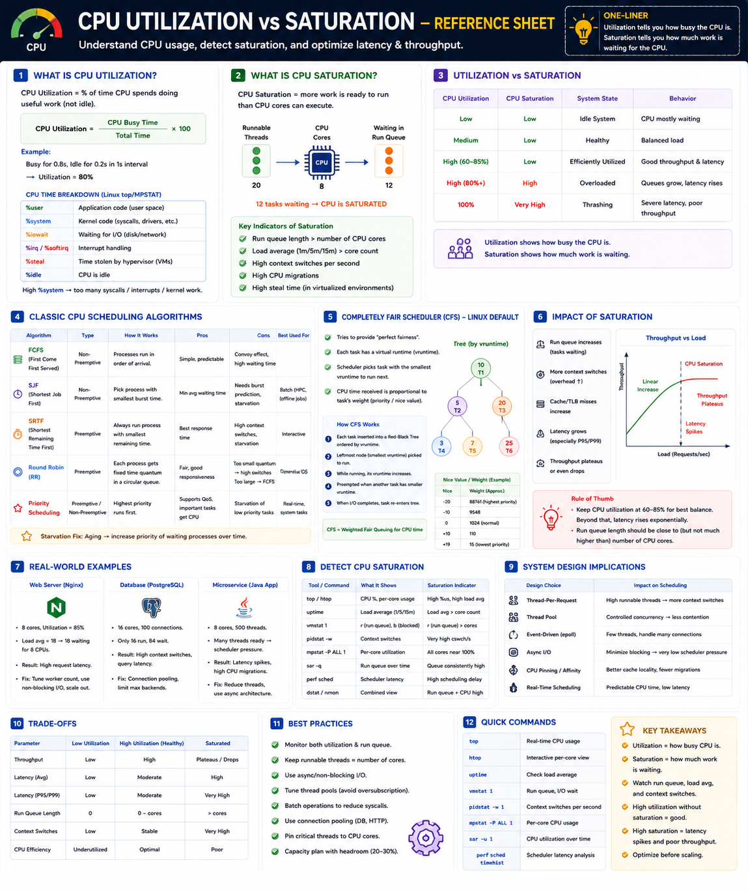

Busy Time • Run Queue • Load Average • Context Switches • Latency Impact • Scaling Decisions
Core Idea — One Metric Is Never Enough
Utilization tells you how busy the CPU is. Saturation tells you how much work is waiting for CPU. A system can be 70% utilized and completely saturated — or 90% utilized and perfectly healthy. You need both metrics to understand whether to optimize, tune, or scale.
CPU Utilization
Measures: how much of available CPU capacity is being used. Does NOT tell you whether tasks are waiting.
CPU Saturation
Measures: work queued up waiting for CPU. High saturation = tasks waiting = latency rising even if utilization looks OK.
CPU Time Breakdown (Linux top / mpstat)
| Metric | Meaning | High Value Alert |
|---|---|---|
%user | Application code (user space) | CPU-bound workload |
%system | Kernel code (syscalls, drivers) | Too many kernel crossings |
%iowait | Waiting for disk / network | I/O bottleneck, not CPU |
%irq / %softirq | Interrupt handling | NIC / disk interrupt storm |
%steal | CPU taken by hypervisor (VM) | Noisy neighbour on cloud |
%idle | CPU doing nothing | Underutilised |
High %system often means excessive syscalls, interrupts, or network processing — not application logic bottlenecks. Investigate differently.
Utilization vs Saturation — System State Grid
| Utilization | Saturation | State | Behaviour |
|---|---|---|---|
| Low | Low | Idle | CPU mostly waiting |
| Medium | Low | Healthy | Balanced, good latency |
| High 60–85% | Low | Efficient | Good throughput & latency |
| High 80%+ | High | Overloaded | Queues grow, latency rises |
| 100% | Very High | Thrashing | Severe latency, poor throughput |
| Medium | High | Contention | Scheduler bottleneck |
Key Saturation Indicators
How Saturation Kills Latency — The Chain
Rule of Thumb: Keep utilization at 60–85% for best balance. Beyond that, latency rises exponentially. Run queue length should stay close to (but not much higher than) core count.
Trade-off: Low vs High vs Saturated
| Parameter | Low Util | Healthy | Saturated |
|---|---|---|---|
| Throughput | Low | High | Plateaus/Drops |
| Avg Latency | Low | Moderate | High |
| P95/P99 | Low | Moderate | Very High |
| Run Queue | 0 | 0 – cores | > cores |
| Ctx Switches | Low | Stable | Very High |
| CPU Efficiency | Under-used | Optimal | Poor |
Real-World Examples
Web Server (Nginx)
Symptoms: slow responses, growing queues, high P99. Fix: fewer blocking calls, tune workers, scale out.
Database (PostgreSQL)
High ctx switches, long query latency. Fix: connection pooling (PgBouncer) — limit max backends to 16–32.
Java Microservice
Looks OK on CPU% but latency is high. Fix: reduce thread pool to ~16–32, or use async I/O.
Detecting CPU Saturation — Tools
| Tool / Command | What It Shows | Saturation Signal |
|---|---|---|
top / htop | CPU %, per-core usage | High %us, high load avg |
uptime | Load average 1/5/15m | Load avg > core count |
vmstat 1 | r (run queue), b (blocked) | r (run queue) > cores |
pidstat -w 1 | Context switches / sec | Very high cswch/s |
mpstat -P ALL 1 | Per-core CPU breakdown | All cores near 100% |
sar -q 1 | Run queue over time | Queue consistently high |
perf sched timehist | Scheduler latency / delay | High scheduling delay |
dstat / nmon | Combined system view | Run queue + CPU high |
Quick Commands
System Design Implications
| Design Choice | Scheduling Impact |
|---|---|
| Thread-per-request | High runnable threads → high saturation |
| Thread Pool | Controlled concurrency → less contention |
| Event-driven (epoll) | Few threads handle many connections |
| Async I/O (io_uring) | Minimize blocking → very low scheduler pressure |
| CPU Pinning / Affinity | Better cache locality, fewer migrations |
| Real-Time Scheduling | Predictable CPU time, low latency |
Best Practices
Production Failure Scenarios
High CPU, stable latency
Expected healthy workload. Run queue near core count. No action required — this is efficient utilization.
High CPU + rising P99 latency
CPU saturated. Scheduler queues growing. Fix: reduce runnable threads, add CPU capacity, or adopt async I/O.
Low CPU but high latency
CPU is NOT the bottleneck. Investigate I/O wait, lock contention, network latency, or slow external dependencies.
High context switch rate
Thread oversubscription. Too many runnable threads fighting for CPU. Reduce thread count or move to event-driven architecture.
High load average, low per-core usage
Check %iowait — processes blocked on disk or network inflate load average even though cores are idle.
Staff Engineer Decision Framework
| Observation | Likely Cause | Action |
|---|---|---|
| High util, low saturation | Healthy workload | Monitor; keep headroom |
| High util, high saturation | CPU bottleneck | Scale out or optimize code |
| Low util, high latency | I/O bottleneck | Fix storage / network / locks |
| High ctx switches | Too many threads | Reduce concurrency or go async |
| High load avg > cores | Scheduler pressure | Tune worker count; profile run queue |
| High %steal | Noisy neighbour (VM) | Move to dedicated host or larger instance |
Engineer Progression
Interview Cheat Sheet
Principal Engineer Takeaway
Utilization — how busy. Does not reveal whether tasks are waiting.
Saturation — work queued. The real cause of P99 latency spikes.
Both required — high util + low saturation = healthy. Same util + high saturation = crisis.
Design goal — maximize useful work, prevent saturation, keep 20–30% headroom.
Staff Engineers monitor both utilization and scheduler pressure — run queue length, load average, context switches — before deciding whether to optimize code, tune thread pools, or scale the system. The goal is not low CPU utilization; it's maximum useful work without saturation.
